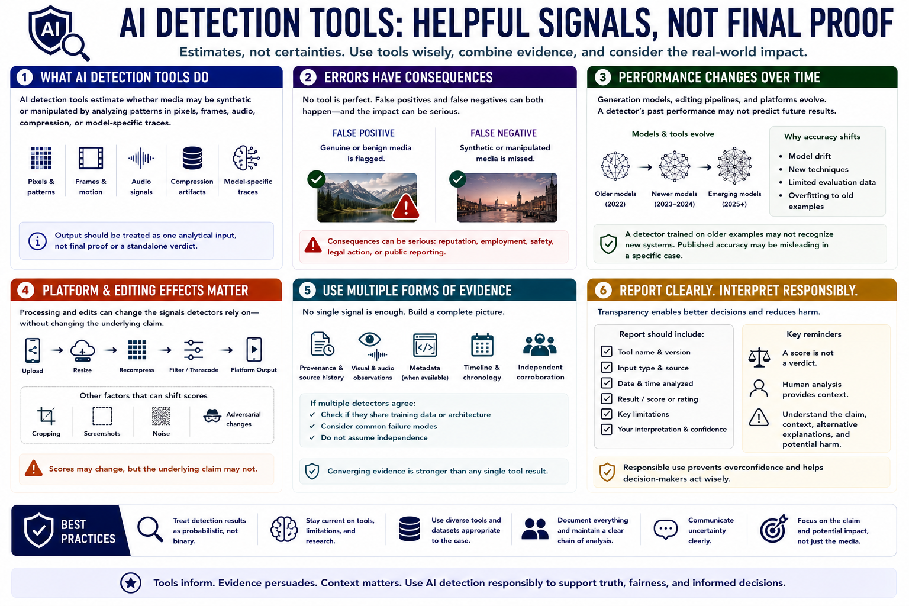

AI Detection Tools and Their Limits
Connecting to LMS... Progress: in progress

Narration
AI detection tools estimate whether media may be synthetic or manipulated. They can analyze patterns in pixels, frames, audio, compression, or model-specific traces. Their output should be treated as one analytical input, not final proof.
A false positive occurs when genuine or benign media is flagged. A false negative occurs when synthetic or manipulated media is missed. Consequences can be serious, especially when a result affects reputation, employment, safety, legal action, or public reporting.
Detection performance changes as generation models, editing pipelines, and platforms change. A detector trained on older examples may not recognize new systems. Model drift and limited evaluation data can make a published accuracy number misleading for a specific case.
Platform processing can resize, recompress, filter, or transcode media, altering the signals a detector uses. Cropping, screenshots, noise, and adversarial changes can also shift scores without changing the underlying claim.
Use multiple forms of evidence. Review provenance, source history, visual and audio observations, metadata, timeline, and independent corroboration. If several detectors agree, ask whether they share training assumptions or failure modes before calling them independent.
Report the tool, version, input, result, limitations, and interpretation. A score is not a verdict. Human analysis remains essential for understanding the claim, context, alternative explanations, and potential harm of an incorrect label.